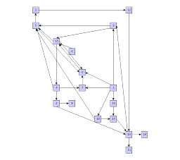
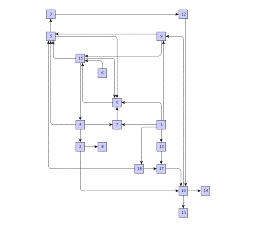
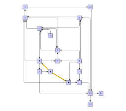
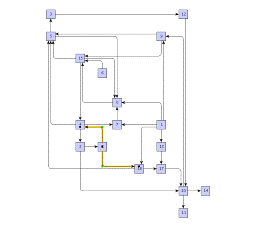
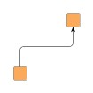
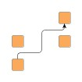
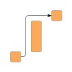
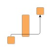
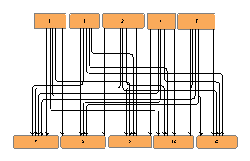
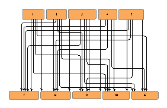

| Orthogonal Edge Routing | ||
|---|---|---|
| Prev | Chapter 5. Automatic Graph Layout | Next |
OrthogonalEdgeRouter is a
versatile and powerful layout algorithm for routing a diagram's edges using
vertical and horizontal line segments only.
The positions of the diagram's nodes will remain fixed.
Usually, the routed edges will not cut through any nodes or overlap any other
edges.
is a
versatile and powerful layout algorithm for routing a diagram's edges using
vertical and horizontal line segments only.
The positions of the diagram's nodes will remain fixed.
Usually, the routed edges will not cut through any nodes or overlap any other
edges.
The possibilities offered by this router make it a perfect layouter for interactive or incremental scenarios where
Figure 5.106. Common use-cases for OrthogonalEdgeRouter
|

|

|
| Graph with fixed node positions, before... | ...and after initial orthogonal edge routing. |
|

|

|
| Subsequently added edges... | ...nicely integrated into existing layout. |
Behind the scenes of orthogonal edge router works a sophisticated path-finding algorithm that can even find routes through a maze. Not only will it find a way but also one with fewest possible changes in direction.
Class OrthogonalEdgeRouter knows a number of data provider keys which are used to retrieve supplemental layout data for a graph's elements. The data is bound to the graph by means of a data provider, which is registered using a given look-up key. Table 5.78, “Data provider look-up keys” lists all look-up keys for OrthogonalEdgeRouter.
Binding supplemental layout data to a graph is described in the section called “Providing Supplemental Layout Data”.
Table 5.78. Data provider look-up keys
| Key | Element Type | Value Type | Description |
|---|---|---|---|
| SOURCE_PORT_CONSTRAINT_KEY |
Edge | PortConstraint | For each edge a PortConstraint object encoding its source end's port constraint. |
| TARGET_PORT_CONSTRAINT_KEY |
Edge | PortConstraint | For each edge a PortConstraint object encoding its target end's port constraint. |
| NODE_DP_KEY |
Node | PortCandidateSet | For each node a PortCandidateSet object encoding the set of allowed anchor locations for edges. |
| SOURCE_PCLIST_DPKEY |
Edge | Collection | For each edge a java.util.Collection of PortCandidate objects that encode the subset of desired anchor locations where the source port likes to connect to. |
| TARGET_PCLIST_DPKEY |
Edge | Collection | For each edge a java.util.Collection of PortCandidate objects that encode the subset of desired anchor locations where the target port likes to connect to. |
OrthogonalEdgeRouter provides a set of options that affect the routing behavior. This section highlights some of the configuration options available.
| Scope | |
| API | void setSphereOfAction(byte scope) |
| Description |
Determines the set of edges that the router should process. The following options are available:
|
| Minimum Edge Distance | |
| API | void setMinimumDistance(int distance) |
| Description | Determines the distance between any two edge segments. The edge router adheres to the set value as possible, but reduces the distance value selectively, i.e., only for a currently processed edge, when there is too little space to find a path with the proper value. |
| Use Custom Minimum Distance to Nodes | |
| API | void setCoupledDistances(boolean coupled) |
| Description | If set, then a custom value for minimum distance between any edge segment and any node side will be used. Otherwise, this distance will automatically be derived from the minimum distance between any two edge segments. Since this option can increase computation time, it is disabled by default. |
| Custom Minimum Distance to Nodes | |
| API | void setMinimumDistanceToNode(int distance) |
| Description | Determines the distance between any edge segment and any node side. The edge router strictly adheres to the set value. Note that this value normally is being automatically derived unless "Use Custom Minimum Distance Edge to Node" is set. |
| Route on Grid | |
| API | void setGridRoutingEnabled(boolean enabled) |
| Description | If set, then all edge paths will be routed on grid lines from a predefined grid. If not set, then "free" routing will be applied to the edge paths. |
| Grid Spacing | |
| API | void setGridSpacing(int gridSpacing) |
| Description | Determines the spacing of the grid lines where all edge paths will be routed upon. Grid spacing plays the same role for routing on grid lines as minimum distance between any two edge segments does for "free" routing. The edge router adheres to the set value as possible, but reduces the spacing value selectively, i.e., only for a currently processed edge, when there is too little space to find a path with the proper value. |
OrthogonalEdgeRouter supports edge routing such that the generated paths obey so-called monotonic path restrictions. This means that (ideally) each vertical and/or each horizontal segment of an edge path is directed the same way, namely from source node to target node. Thus, when following the edge path, there is never a "turning back" towards the source node, but instead a steady movement towards the target node.
Monotonic edge paths are useful, for example, when routing edges in UML class diagrams/inheritance diagrams or in a tree-like organization chart.
| Monotonic Path Restrictions | |
| API | void setMonotonicPathRestriction(byte monotonicPathRestriction) |
| Description |
Specifies the kind of monotonic path restrictions for edges. The following restrictions are available:
|
| Enforce Monotonic Path Restrictions | |
| API | void setEnforceMonotonicPathRestrictions(boolean enforced) |
| Description | Determines whether the specified monotonic path restrictions shall be obeyed even if this results in edges crossing through nodes or node labels. |
Figure 5.109, “Edge routing with monotonic path restrictions” illustrates the results of specifying monotonic edge path restrictions. All figures have specified restrictions in vertical direction, i.e., each vertical edge segment shall be directed from source node to target node.
Figure 5.109. Edge routing with monotonic path restrictions
|

|

|

|

|
| Ideal edge route with monotonic path restrictions in vertical direction. | Stairs-like edge path due to obstacles. Vertical path restrictions are obeyed. | Vertical path restrictions cannot be obeyed due to large obstacle. | Enforcing vertical path restriction causes the edge path to cross through the large obstacle. |
| Space Driven Versus Center Driven Search | |
| API | void setCenterToSpaceRatio(double ratio) |
| Description | Determines the ratio between two complementary weighting strategies when looking for an edge path, namely "center driven" and "space driven" weighting. The ratio is expressed with a value between 0.0 and 1.0. Values closer to 0.0 lead to edge paths that are more distributed over the available space. Values closer to 1.0 give more emphasis to paths near the "barycenter" of the given edge. |
Figure 5.110. Difference between "center driven" and "space driven" search strategy
|

|

|
|
| Ratio slider at 1.0 means 100% "center driven" search strategy when looking for an edge path. | Ratio slider at 0.0 means 100% "space driven" search strategy when looking for an edge path. |
| Local Crossing Minimization | |
| API | void setLocalCrossingMinimizationEnabled(boolean enabled) |
| Description | If not set, the number of crossings seen at a node's side can increase a lot. Since this option has a positive effect on diagram "readability," it is enabled by default. |
| Crossing Cost | |
| API | void setCrossingCost(double cost) |
| Description | Determines a "penalty" for edge crossings. Basically, a penalty value of n means that an edge rather changes direction n times than cross an already routed edge path. In contrast to "Local Crossing Minimization" this optimization works globally, i.e., on an entire edge path. Good values for a crossing penalty lie in the range from 1.0 to 3.0. By default this value is set to 0.0, i.e., there is no penalty. |
| Reroute Crossing Edges | |
| API | void setReroutingEnabled(boolean enabled) |
| Description | If set, then edges with many crossings will be rerouted. This optimization makes only sense in combination with values greater than 0.0 for "Crossing Cost." By default, rerouting edges is disabled. |
Orthogonal edge router obeys both types of port constraints, weak and strong.
The port constraints are retrieved from data providers that are bound to the
graph using the look-up keys
SOURCE_PORT_CONSTRAINT_KEY and
TARGET_PORT_CONSTRAINT_KEY
and
TARGET_PORT_CONSTRAINT_KEY ,
respectively.
,
respectively.
In addition to the support provided for port constraints, orthogonal edge router also supports the concept of port candidates. Both aspects, i.e., matching port candidates as well as modeling enhanced port constraints are supported.
For the matching of port candidates, the set of allowed anchor locations for
edge ends at the nodes of a graph are retrieved from a data provider that is
bound to the graph using the look-up key
NODE_DP_KEY .
The subset of desired anchor locations where the source ports and target ports
of edges like to connect to are retrieved from data providers that are bound to
the graph using the look-up keys
SOURCE_PCLIST_DPKEY
.
The subset of desired anchor locations where the source ports and target ports
of edges like to connect to are retrieved from data providers that are bound to
the graph using the look-up keys
SOURCE_PCLIST_DPKEY and
TARGET_PCLIST_DPKEY
and
TARGET_PCLIST_DPKEY ,
respectively.
,
respectively.
See the section called “Port Candidates” for a detailed description of the port candidates concept.
For modeling enhanced port constraints, the set of possible port candidates for
the edges of a graph are retrieved from data providers that are bound to the
graph using the look-up keys
SOURCE_PCLIST_DPKEY and
TARGET_PCLIST_DPKEY
and
TARGET_PCLIST_DPKEY ,
respectively.
,
respectively.
The following table lists the data provider look-up keys that are recognized by OrthogonalEdgeRouter in conjunction with port candidates.
Table 5.79. Data provider look-up keys
| Key | Element Type | Value Type | Description |
|---|---|---|---|
| NODE_DP_KEY |
Node | PortCandidateSet | For each node a PortCandidateSet object encoding the set of allowed anchor locations for edges. |
| SOURCE_PCLIST_DPKEY |
Edge | Collection | For each edge a java.util.Collection of PortCandidate objects that encode the subset of desired anchor locations where the source port likes to connect to. |
| TARGET_PCLIST_DPKEY |
Edge | Collection | For each edge a java.util.Collection of PortCandidate objects that encode the subset of desired anchor locations where the target port likes to connect to. |
OrthogonalEdgeRouter supports incremental routing through the "Scope" feature. See the above description.
OrthogonalEdgeRouter can be set up to take node labels into account during routing.
OrthogonalEdgeRouter provides support for node label-aware orthogonal edge routing. The size of node labels is taken into consideration during routing. If space permits, the algorithm will generate edge paths that do not not cross through these labels in the resulting diagram.
void setConsiderNodeLabelsEnabled(boolean enabled) |
|
| Description | Enables node label-aware edge routing. |
Table 5.80, “Layout Stages” lists layout stages that can be used to enhance the routing process of class OrthogonalEdgeRouter.
To add octilinear edge routing to the diagram that results from the orthogonal edge router calculation, PolylineLayoutStage needs to be the outermost layout stage of all OrthogonalEdgeRouter-specific layout stages.
Table 5.80. Layout Stages
| Classname | Description |
|---|---|
| EdgeGroupRouterStage |
Adds support for edge/port grouping, i.e., bus-style edge routing. |
| GroupNodeRouterStage |
Adds support for routing so-called inter-edges, i.e., edges that cross group node boundaries in a grouped graph. |
| PatchRouterStage |
Increases routing performance by decomposing the graph. |
| ReducedSphereOfActionStage |
Increases routing performance when only a subset of the graph's edge set should be routed. |
| PartitionGridRouterStage |
Adds support for routing edges in a partition grid. |
| PolylineLayoutStage |
Adds octilinear edge routing to the diagram that results from the orthogonal edge router calculation. Use as the outermost layout stage of all OrthogonalEdgeRouter-specific layout stages. |
The following code snippet shows the setup/nesting of OrthogonalEdgeRouter-specific layout stages. Similar setup can be observed in class OrthogonalEdgeRouterModule.java.
Example 5.46. Nesting of OrthogonalEdgeRouter-specific layout stages
// 'graph' is of type y.layout.LayoutGraph.
OrthogonalEdgeRouter oer = new OrthogonalEdgeRouter();
// String together an edge routing process using OrthogonalEdgeRouter and its
// layout stages.
new BufferedLayouter(
new EdgeGroupRouterStage(
new GroupNodeRouterStage(
new ReducedSphereOfActionStage(
new PatchRouterStage(oer))))).doLayout(graph);
A tailored edge routing setup for diagrams in a partition grid involves layout stage class PartitionGridRouterStage:
// 'graph' is of type y.layout.LayoutGraph.
OrthogonalEdgeRouter oer = new OrthogonalEdgeRouter();
// String together an edge routing process tailored to partition grids.
new BufferedLayouter(
new GroupNodeRouterStage(
new PartitionGridRouterStage(oer))).doLayout(graph);
The following yFiles source code demo programs demonstrate how to use OrthogonalEdgeRouter within an application.
Additionally, in UMLClassDiagramLayouterDemo.java enhancing OrthogonalEdgeRouter with edge/port grouping by means of layout stage EdgeGroupRouterStage can be seen.
|
Copyright ©2004-2015, yWorks GmbH. All rights reserved. |